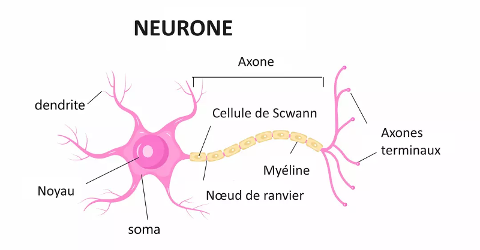

L'intelligence artificielle : une inspiration issue du vivant
Introduction
L'intelligence artificielle (IA) s'est toujours inspirée du vivant. Depuis ses débuts, elle puise dans les mécanismes biologiques, biochimiques et neurologiques pour concevoir des modèles et des algorithmes capables de résoudre des problèmes complexes. Cette approche biomimétique a permis des avancées majeures, allant des premiers réseaux neuronaux artificiels à des modèles évolutifs et neuromorphiques récents. Ce rapport explore l'évolution de ces méthodes et les tendances actuelles en IA inspirée du vivant.
1. Premiers modèles inspirés du vivant
1.1 Les réseaux neuronaux artificiels
L'un des premiers exemples d'IA inspirée du vivant est le Perceptron (1958) de Frank Rosenblatt, qui imitait le fonctionnement des neurones biologiques. Ce modèle simplifié reposait sur un réseau de neurones artificiels avec des connexions pondérées et une fonction d'activation, reproduisant le principe de transmission des signaux entre neurones.
Par la suite, les réseaux neuronaux se sont complexifiés avec l'émergence des réseaux multicouches (MLP), puis des réseaux de neurones profonds (DNN) et convolutifs (CNN). Ces modèles sont directement inspirés de l'architecture du cortex cérébral, notamment dans le traitement des images où différentes couches du réseau extraient progressivement des caractéristiques de plus en plus abstraites, à l'image des aires visuelles du cerveau.

1.2 Mécanismes d'attention
L'attention est la capacité du cerveau à sélectionner, amplifier et maintenir des informations pertinentes tout en ignorant les distractions. Ce mécanisme joue un rôle crucial dans la cognition humaine, notamment dans la perception, la mémoire et le langage.
En IA, on retrouve ce principe dans les modèles "Transformer" qui utilisent des mécanismes d'attention pour hiérarchiser et pondérer l'importance des différentes parties d'une séquence d'entrée. Bien que leur développement ne soit pas explicitement issu de la biologie, on peut établir une analogie avec le fonctionnement du cerveau.
Dans les modèles Transformer, l'attention permet aux réseaux neuronaux de focaliser leur traitement sur les informations les plus pertinentes d'un texte ou d'une image, tout comme le cerveau humain ajuste son attention en fonction du contexte et des stimuli. Ce mécanisme est fondamental dans le succès des modèles de traitement du langage naturel comme GPT et BERT, qui peuvent établir des relations contextuelles complexes entre les mots.
En somme, l'intégration du mécanisme d'attention en intelligence artificielle a permis d'apporter une profondeur inégalée aux systèmes de traitement du langage et de la vision artificielle. Ce concept renforce l'analogie avec le cerveau humain en reproduisant une gestion efficace des ressources cognitives à travers l'allocation dynamique de l'attention.
L'intelligence artificielle a été profondément influencée par la biologie pour la création de modèles, en particulier grâce à l'usage du formalisme mathématique. Ce choix était motivé par l'idée que le meilleur moyen d'apprendre réside dans la reproduction des structures et des mécanismes biologiques sous forme de mathématiques rigoureuses. Ainsi, les réseaux neuronaux et les mécanismes d'attention se sont inspirés des processus cérébraux, et ont permis des avancées significatives dans des environnements d'apprentissage simples et bien définis.
Cependant, cette approche a ses limites. Lorsque l'environnement dans lequel évolue l'agent devient plus complexe, notamment en raison de la multitude de dimensions à prendre en compte, les modèles purement mathématiques montrent leurs faiblesses. Face à ces défis, il est devenu nécessaire de s'inspirer à nouveau du vivant, mais cette fois de manière plus approfondie et nuancée. La biologie, avec ses systèmes adaptatifs et dynamiques, offre des solutions plus adaptées aux environnements complexes et moins linéaires. Ainsi, en réponse à la complexité croissante, l'IA évolue pour mieux imiter la flexibilité, la résilience et la capacité d'adaptation observées dans le vivant, ouvrant la voie à des modèles plus robustes et puissants face à des environnements d'apprentissage de plus en plus sophistiqués.
2. L'apprentissage bio-inspiré
Lorsque l'environnement devient plus complexe, il est souvent impossible de caractériser l'environnement et les actions de l'agent sous un formalisme mathématique strict, capable de garantir une solution optimale. Face à cette difficulté, les chercheurs en intelligence artificielle se sont inspirés des mécanismes biologiques, plus précisément des systèmes dopaminergiques qui régissent l'apprentissage dans le cerveau humain, pour concevoir des méthodes plus adaptées aux environnements dynamiques et incertains. L'une des approches bio-inspirées qui a émergé est l'apprentissage par renforcement (Reinforcement Learning, RL).
1. Reinforcement Learning : S'inspirer de l'apprentissage du vivant
L'apprentissage par renforcement est un cadre d'apprentissage où un agent apprend à prendre des décisions par l'intermédiaire d'interactions avec son environnement. Ce type d'apprentissage est particulièrement inspiré du système dopaminergique du cerveau humain, où la dopamine joue un rôle essentiel dans l'évaluation et l'apprentissage des actions récompensées.
Dans ce modèle, l'agent effectue des actions dans son environnement, et après chaque action, il reçoit une récompense ou une punition qui lui permet d'adapter ses comportements futurs. Ce mécanisme est similaire à la façon dont les humains et les animaux apprennent par essai-erreur, en ajustant leurs actions en fonction des résultats observés.
Les algorithmes de RL cherchent à maximiser la somme des récompenses futures à travers une politique d'action optimale. Ce processus d'apprentissage continu s'inspire de l'adaptation des comportements dans le vivant pour maximiser les bénéfices à long terme.
Explication du Reinforcement Learning
Le Reinforcement Learning se compose de plusieurs éléments clés qui interagissent dans un cycle d'apprentissage :
- Agent : L'agent est celui qui prend les décisions, comme un robot naviguant dans un environnement ou un programme informatique résolvant un problème. C'est l'entité qui apprend à partir de ses actions et des récompenses qu'il reçoit.
- Environnement : L'environnement est l'espace dans lequel l'agent évolue. Il peut s'agir d'un jeu vidéo, d'une simulation ou du monde réel dans lequel l'agent interagit et apprend à se comporter.
- État : L'état représente la situation actuelle de l'agent dans l'environnement. C'est une image de ce que l'agent perçoit à un instant donné, comme la position d'un robot dans une pièce ou la situation d'un joueur dans un jeu vidéo.
- Action : L'action est une décision prise par l'agent en fonction de son état actuel. Par exemple, dans un jeu, l'action pourrait être de déplacer le personnage dans une direction ou de sauter.
- Récompense : La récompense est un signal qui évalue la performance de l'agent après avoir pris une action. Elle peut être positive (récompense) ou négative (punition) en fonction de l'effet de l'action sur l'objectif poursuivi par l'agent.
- Stratégie (Policy) : La politique est la stratégie adoptée par l'agent pour choisir ses actions en fonction de l'état dans lequel il se trouve. L'objectif du RL est de trouver une politique qui maximise la récompense cumulée à long terme.
En résumé, l'apprentissage par renforcement est un processus qui permet à un agent d'apprendre à naviguer dans un environnement complexe en apprenant de ses actions passées et en ajustant ses décisions en fonction des récompenses reçues, un peu comme le système dopaminergique dans le cerveau humain. Cette approche bio-inspirée permet de résoudre des problèmes d'apprentissage dans des environnements où les solutions optimales ne sont pas directement accessibles via des formalismes mathématiques traditionnels.
3. Les algorithmes génétiques & évolutionnaires
Les algorithmes génétiques s'inspirent de deux grands concepts de l'évolution biologique pour résoudre des problèmes d'optimisation complexes : le brassage génétique et l'évolution par sélection naturelle.
Brassage génétique et évolution par sélection naturelle
- Brassage génétique : Cela correspond à l'échange de matériel génétique entre géniteurs, permettant de combiner les caractéristiques favorables de différentes solutions. Ce processus est accompagné de mutations aléatoires qui introduisent de la variabilité, permettant à l'algorithme d'explorer de nouvelles régions du problème d'optimisation.
- Évolution par sélection naturelle : Ce principe repose sur la sélection des individus les plus adaptés à leur environnement. Les solutions les plus performantes sont conservées et reproduites, tandis que celles qui ne sont pas optimales sont éliminées. Ce mécanisme permet d'évoluer progressivement vers des solutions optimales au fil des générations.
Le principe des algorithmes génétiques
Les algorithmes génétiques suivent un processus itératif structuré autour de cinq étapes principales :
- Initialisation : Une population de solutions est générée aléatoirement. Chaque individu représente une solution potentielle au problème d'optimisation.
- Évaluation : Chaque solution est évaluée à l'aide d'une fonction de fitness, qui mesure la qualité de la solution en fonction des critères définis.
- Sélection : Les meilleures solutions (les plus adaptées) sont choisies pour former la prochaine génération. Cela permet de garantir que les solutions les plus prometteuses continuent à évoluer.
- Croisement : Les solutions sélectionnées sont combinées pour créer une nouvelle génération. Cela correspond au processus de reproduction, où les "gènes" des solutions parentales sont mélangés pour créer des solutions "enfant".
- Mutation : De légères modifications aléatoires sont appliquées à certaines solutions pour introduire de la diversité et éviter la convergence prématurée vers une solution locale.
- Itération : Le processus est répété jusqu’à atteindre une solution optimale ou que le critère d'arrêt (comme un nombre maximal de générations ou un seuil de performance) soit atteint.
Algorithmes évolutionnaires
Les algorithmes évolutionnaires sont une généralisation des algorithmes génétiques. Ils diffèrent principalement par :
- Utilisation d’autres représentations : Les solutions ne sont pas nécessairement représentées sous forme de chaînes de bits. D'autres formes peuvent être utilisées, comme des vecteurs de nombres réels, des arbres syntaxiques (comme dans la programmation génétique) ou des graphes.
- Stratégies de sélection plus complexes : Les méthodes de sélection peuvent être plus sophistiquées, permettant une gestion plus fine des populations d'individus.
Représentations dans les algorithmes évolutionnaires
- Vecteur de nombres réels : Représentation des solutions sous forme de vecteurs numériques, souvent utilisée dans les problèmes d'optimisation continue.
- Arbres syntaxiques (programmation génétique) : Utilisation d'arbres pour représenter des solutions, souvent employée dans la création de programmes ou d'expressions mathématiques.
- Graphes : Utilisation de graphes pour représenter des structures complexes ou des réseaux de relations.
Stratégies de sélection
Différentes méthodes de sélection permettent de choisir les individus les plus performants pour la reproduction et l'évolution de la population :
- Roulette Wheel Selection : Plus la fitness est élevée, plus l’individu a de chances d’être sélectionné. Cette méthode utilise une probabilité proportionnelle à la qualité de la solution.
- Sélection par tournoi : Plusieurs individus sont tirés au hasard et l'individu le plus performant est choisi. Cette méthode est efficace et simple à implémenter.
- Sélection selon le rang : Les individus sont triés en fonction de leur fitness et les probabilités de sélection dépendent de leur position dans le classement.
- Novelty Search : Une méthode très bio-inspirée, qui privilégie les individus explorant des comportements nouveaux. Cela permet de favoriser la diversité et l'exploration de solutions inédites, même si elles ne sont pas immédiatement optimales selon les critères classiques.
Avantages des algorithmes génétiques
- Contexte d’utilisation : Les algorithmes génétiques sont particulièrement efficaces lorsqu'il est difficile de caractériser l’environnement d'un problème de manière analytique ou lorsque l'espace de solutions est trop vaste pour appliquer des méthodes d'optimisation classiques.
- Très versatile : Ces algorithmes sont largement utilisés dans des domaines variés, allant de l'optimisation continue à la programmation génétique, en passant par les problèmes combinatoires complexes.
Limites des algorithmes génétiques
- Peu de cas d’usages sur les garanties de convergence : Bien que puissants, les algorithmes génétiques ne garantissent pas toujours la convergence vers la solution optimale, particulièrement lorsque l'environnement est trop bruyant ou difficile à modéliser.
- Sensible au bruit : Ils sont particulièrement sensibles aux variations ou au bruit dans l'environnement, ce qui peut perturber le processus d'optimisation.
- Non optimal si l’environnement peut être caractérisé : Si l'on peut définir un modèle mathématique précis de l'environnement, les algorithmes génétiques ne sont pas toujours le choix le plus efficace comparé à d'autres méthodes d'optimisation plus ciblées.
4. IA inspirée des systèmes biologiques complexes
4.1 Algorithmes de recherche par essaim
Les systèmes collectifs dans la nature, comme les colonies de fourmis, les bancs de poissons ou les essaims d’abeilles, ont inspiré plusieurs algorithmes d'optimisation. Ces systèmes, en collaborant et en interagissant de manière décentralisée, trouvent des solutions optimales à des problèmes complexes sans qu'il soit nécessaire de recourir à une coordination centrale. Les algorithmes qui en découlent exploitent cette idée de coopération et d'intelligence collective.
- Optimisation par colonie de fourmis (ACO) : Cet algorithme s'inspire du comportement des fourmis à la recherche de nourriture. En déposant des traces de phéromones, les fourmis modifient leur environnement pour guider les autres vers des sources de nourriture optimales. L'ACO fonctionne de manière similaire en utilisant des traces pour optimiser les chemins dans des espaces de solutions complexes.
- Optimisation par essaim de particules (PSO) : Ce modèle est inspiré des bancs de poissons ou des vols d'oiseaux. Chaque "particule" dans l'algorithme représente une solution possible, qui se déplace à travers l'espace de solutions en fonction de son propre meilleur état et de celui de ses voisins. Ce comportement de coopération permet de trouver des solutions optimales.
- Algorithme des lucioles (FA) : Inspiré par les comportements de synchronisation des lucioles, cet algorithme optimise les solutions en s'appuyant sur des attracteurs lumineux. Les lucioles, dans un environnement, se déplacent vers les plus lumineuses, un principe similaire à l'optimisation des solutions selon leur attractivité.
4.2 Modèles inspirés de la biologie cellulaire et moléculaire
Les systèmes biologiques à l’échelle cellulaire et moléculaire, qui régissent la vie à une échelle plus fondamentale, ont également inspiré des approches en intelligence artificielle. Ces modèles imitent les processus naturels, souvent à travers des mécanismes d'auto-organisation, de croissance et de régulation.
- Les automates cellulaires : Les automates cellulaires sont des modèles computationnels où des "cellules" interagissent localement selon des règles simples, mais peuvent mener à des comportements globaux complexes. Ces systèmes sont utilisés pour modéliser la morphogenèse et l'évolution des systèmes vivants, et sont appliqués dans des domaines tels que la simulation biologique et l'optimisation.
- Les réseaux de régulation génétique : Ces réseaux modélisent les interactions entre gènes dans un organisme vivant et sont utilisés en bio-informatique et en apprentissage automatique. Ils permettent de modéliser des systèmes complexes où l'information est traitée de manière parallèle et interconnectée, offrant une approche bio-inspirée pour la modélisation de systèmes de régulation et d'adaptation.
5. Vers une IA plus proche du vivant ?
5.1 Intelligence artificielle et conscience biologique
Des recherches récentes commencent à explorer des modèles d'IA qui vont au-delà de la simple imitation des processus biologiques pour tenter de comprendre et de reproduire des concepts plus profonds du vivant, tels que l'auto-organisation et la conscience. Ces modèles cherchent à simuler des processus cognitifs de manière plus proche de ceux observés chez les organismes vivants, avec pour objectif ultime d'atteindre des systèmes d'IA capables d'adaptation, d'apprentissage autonome, et de conscience artificielle.
5.2 L'essor de l'IA hybride
Les approches modernes de l'IA combinent des réseaux neuronaux profonds, des modèles probabilistes et des approches bio-inspirées pour créer des algorithmes plus puissants et efficaces. L'IA hybride vise à intégrer les meilleures caractéristiques des différentes paradigmes d'IA afin de mieux traiter des problèmes complexes et de s’adapter à des environnements d'apprentissage plus difficiles. Ces approches combinées permettent de lever certaines limitations des modèles purement mathématiques en introduisant plus de flexibilité et de diversité dans les stratégies d’apprentissage.